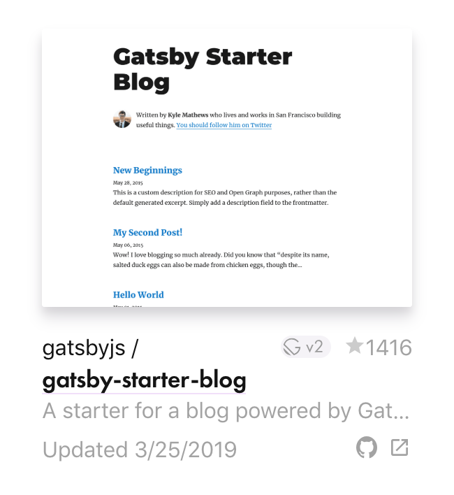
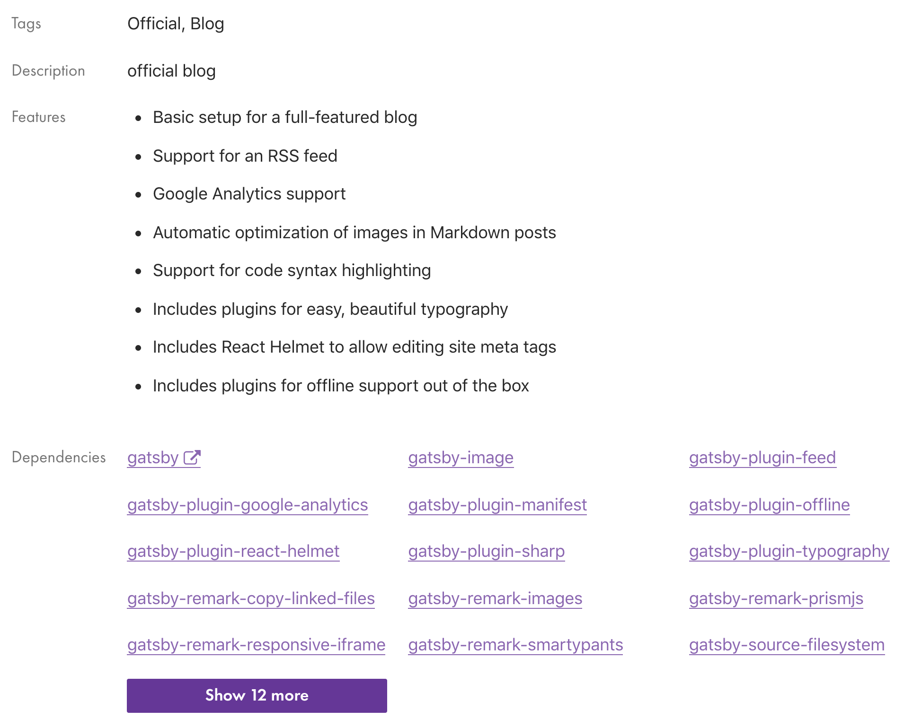
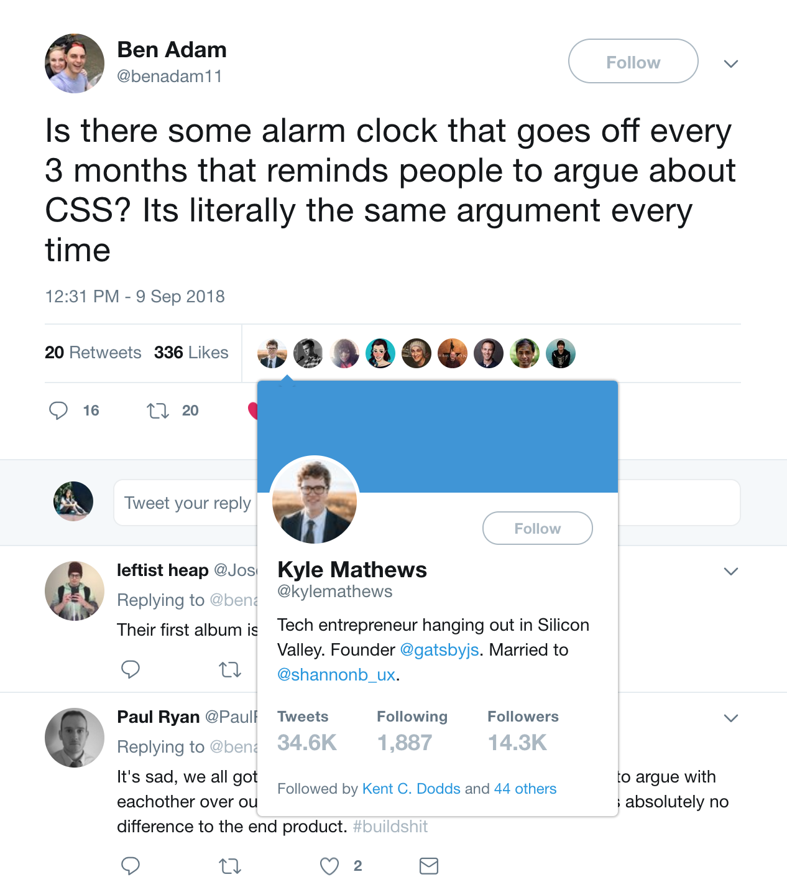

Gatsby

If you feel like you’ve learned something in the past few years I deeply recommend starting a blog, if only to catalog your thoughts.
— Dan Abramov (@dan_abramov) December 30, 2018
I like to have full control over the experience.
Add bento
538ac80
export function formatReadingTime(minutes) {
let cups = Math.round(minutes / 5);
let bowls = 0;
if (cups > 5) {
return `${new Array(Math.round(cups / Math.E))
.fill('🍱')
.join('')} ${minutes} min read`;
} else {
return `${new Array(cups || 1)
.fill('☕️')
.join('')} ${minutes} min read`;
}
}
 +
+
Fast in every way that matters


target specific use scenarios
- Blog
- Portfolios
- Ecommerce
- Business landing
- Community
- Presentation
- ... more at the Starters Library
🤔
What's the difference?

Styling

Styling
Typography


Although many books define the purpose of typography as enhancing the readability of the written word, one of design’s most humane functions is, in actuality, to help readers avoid reading.A Type Primer by John Kane
import Typography from 'typography'
const typography = new Typography({
baseFontSize: '18px',
baseLineHeight: 1.666,
headerFontFamily: ['Avenir Next', 'Helvetica Neue', 'Segoe UI', 'Helvetica', 'Arial', 'sans-serif'],
bodyFontFamily: ['Georgia', 'serif'],
// See below for the full list of options.
})
// Output CSS as string.
typography.toString()
// Or insert styles directly into the head (works well for client-only
// JS web apps.
typography.injectStyles()
Plugins
(work in progress)
Reaching
(work in progress)
will be about setting up SEO, GA, deployment
Do chefs
cook at home?
(work in progress)
After cooking non-stop for 10/15 hours per day, the last thing you want to do as home is cook your own meal.A Quora Answer

Waking up to a healthy breakfast of #puffedrice #chiaseeds #figs #grapes and #yogurt :))))
We eat well at home. But that's not because Rene cooks. I cook.(quote not exact, taken out from Rene's episode of Chef's Table) Nadine Levy Redzepi, cookbook author, wife of Rene Redzepi, Danish chef and co-owner of a Michelin 2-star restaurant
🥘❓💩⁉️
create some nonsense this weekend❣️